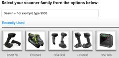
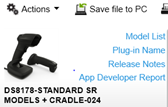

Overview
123Scan is an easy-to-use, PC-based software tool that enables the quick and easy set-up of Zebra scanners.
123Scan uses a wizard tool to guide users through a streamlined set up process. Once parameters are set, the values are saved to a configuration file that can be distributed via email, electronically downloaded via USB cable or used to generate a sheet of programming bar codes that can be scanned.
123Scan can generate multiple reports that can be easily rebranded using Microsoft Word and Access. Report options include parameters, asset tracking (inventory) information and a validation of scanned data.
Additionally, 123Scan can display scanned barcode data including non-printable characters. It can display, optimize and save pictures from an imager scanner. It can also upgrade scanner firmware, automatically check online to enable support for newly released products, generate a single 2D barcode for one scan programming and stage large numbers of scanners simultaneously via USB hub(s).
Functionality
- Optimized for first time users.
- Utility supports the latest scanner updates by performing a check for updates at bootup
-
Generation of an electronic configuration file.
-
Supported programming modes from a configuration file include.
- Electronic programming
- Barcode scanning
- Maintain a library of configuration files by saving files to your PC.
-
Supported programming modes from a configuration file include.
-
Program Data Formatting Rules
- Advanced Data Formatting (ADF)
- Multicode Data Formatting (MDF)
-
Data Parsing
- UDI
- GS1
- Blood Bag
- Drivers Licensing Parsing (USA only)
-
Firmware upgrade of scanners
- Using a standard USB cable
- Using a Bluetooth connection to a Cordless Scanner (no cradle)
-
Report generation capabilities.
- Parameter Report: List of parameters programmed within a configuration file.
- Activity Report: List of activities performed on a scanner(s) within a screen session.
- Inventory Report: List of scanners configured and their asset tracking information.
- Validation Report: Printout of scanned data can include non-printable characters.
- Statistics Report: List of all statistics retrieved from scanner.
-
Rebranding Reports / Partner Customization.
- Customize Programming Barcode Sheet after 123Scan outputs it to a Microsoft Word document.
- Customize Reports after 123Scan outputs it to a Microsoft Word document.
-
Data Viewer
- Display scanned barcode data from a USB cable including non-printable characters.
- Display, optimize and save images from a USB connected imager scanner.
-
Discovered Scanner Tab.
- Access to scanner asset tracking information.
-
Ability to program scanners simultaneously using powered USB hubs. If a 7-port hub, it must have at least a 3.5 Amp power supply. For fast staging use 123Scan's Mass Upgrade Mode available on the Discovered Scanners tab.
- Loading a configuration : 10 Scanners
- Upgrading firmware : 10 Corded; or 3 to 5 Cordless; or 2 to 5 MP7X00; or 2 to 4 RFD8500
- Statistics Viewer for scanners that support statistics such as the MP6000, DS3608, LI3678…
-
Remote Management Package
- Generate SMS (Scanner Management Package) using built in wizard.
Supported Devices
For the compatible devices list, please visit following page.
https://www.zebra.com/us/en/support-downloads/software/scanner-software/123scan-utility.htmlInstallation Requirements
Hardware Requirements
- Pentium Dual-Core E214 1.6GHz or Pentium Mobile Dual-Core T2060 or Pentium Celeron E1200 1.6GHz.
- 2GB RAM 1.2 GB free hard drive space.
- USB port, 1.1 or higher, for the connection of USB Scanners.
- Minimum display resolution = 1024 by 768 pixels.
NOTE: To use 123Scan, a Windows computer and mouse are required. 123Scan does not support touch screen use.
Software and Supported Operating Systems
-
Supported Operating Systems
- Windows 10 - 32bit & 64bit
- Windows 11 - 64bit
- If not present, Microsoft .NET Framework 4.0 client profile will be loaded at time of initial 123Scan installation.
123Scan can be launched from Start Screen
Start Screen → Apps → Zebra Scanner → “123Scan - Configuration Utility”
In order for 123Scan to download utility and plug-in updates the following requirements must be met:
- Have connectivity to Internet (direct or via proxy).
- Allow HTTPS data (Port 443 should be open if a firewall is present).
-
The proxy setting should be set in the System Proxy not on Individual applications (Ex. Firefox Proxy will not work). [ http://windows.microsoft.com/en-US/windows7/Change-proxy-server-settings-in-Internet-Explorer].
- This can be confirmed by browsing to https://www.zebra.com/content/dam/zebra_new_ia/en-us/solutions-verticals/product/Software/scanner-software/123scan/fact-sheets/data-capture-dna-123scan-fact-sheet-en-a4.pdf from Internet Explorer. It should download the ZEBRA SCANNER 123SCAN SPEC SHEET. If not, there is some proxy setting issue.
- Application needs at least 1Mb of free space in C: drive or the System drive.
Version History
Version 6.00.0036 - 09/2025
- Added the ability to configure a custom a delimiter for “Send all fields” and “Send all other fields” options in Label Parsing and GS1 Digital Link programming.
- Updated the dialog box when saving an SMS package to indicate the minimum SMS required version supporting rotational log file creation for Linux.
- Added support to display default settings of simple data formatting to be driven by plug-in.
- Bug fix - Fixed incorrect programming barcode generated for GS1 Digital Link when changing from Mode 2 to Mode 1.
- Bug fix - Fixed incorrect fields when saving a configuration file with a HIBCC rule containing Serial Number, Expiration date and Batch/LOT.
- Bug fix - Fixed issue in the configuration migration flow, where the save configuration prompt was not displayed for an unsaved configuration file when closing the tab.
- Bug fix - Fixed an application crash, when attempting to add ADF rules from the ADF library, when the application was executed on a French operating system.
Version 6.00.0035 - 06/2025
- Added descriptions for scanner parameters within the Configuration wizard.
- Added Log file count in SMS Wizard to configure log file rotation based on the value specified in the SMS package.
- Removed Log method and Log file size from SMS Wizard's log settings.
Version 6.00.0034 - 04/2025
- Bug fix - Fixed locked Data and Separators fields in UDI parsing rule setup.
Version 6.00.0033 - 03/2025
- Added the parsing capabilities to the GS1 Digital Link settings, for supported scanners.
- Added supplemental symbologies for Selectable Label Identification support for MP7XXX and SP72XX.
- Updated Staging Flash Drive Tools menu selection to represent both multi-plane and single-plane scanners.
- Updated the App Developer Report to represent the parameter groups as per the Configuration Wizard.
- Enhanced the exact matching plug-in download flow.
- Bug fix - Fixed an application crash when attempting to open a configuration with a large ADF rule set exceeding the maximum memory permitted by the matched plug-in.
Version 6.00.0028 - 12/2024
- Added support to program GS1 Digital Link settings for supported scanners.
- Updated the new URL for How-to-video links.
- Updated the network requirements for 123Scan over-the-air updates.
Version 6.00.0022 - 09/2024
- Enhanced the Staging Flash Driver Package Wizard and its scanner family categorization to display recently used, active and discontinued scanners.
- Enhanced the Start Tab to include a new button as “Clone/Migrate configuration”, which allows selecting to clone a scanner's configuration or migrate a connected scanner's configuration settings.
- Added “Veteran” field for Driver's License parsing.
- Updated 123Scan's network requirements information to include URLs to be allowed through firewall settings. The updated content is available through Help → Network requirements for 123Scan updates.
- Updated the hyperlink to access discontinued scanners through 123Scan's scanner family page, SMS wizard and SFD wizard.
- Added attributes “Scale Interval Range” and “Legal Scale Units” to Scale Diagnostics of App Developer Report.
Version 6.00.0021 - 08/2024
-
Added configuration support for GS1 Digital Link
- This feature will automatically appear when a scanner's plugin, with its associated firmware, that supports GS1 Digital Link is imported into 123Scan.
- To access this functionality, when a Digital Link enabled plugin is present, go to the configuration wizard.s “Modify Data” tab, then select the “GS1 Digital Link” radial button.
Version 6.00.0019 - 07/2024
- Enhanced the SMS Wizard and its scanner family categorization to display recently used, active and discontinued scanners.
Version 6.00.0017 - 04/2024
-
Added a new feature to migrate a connected scanner's configurations into a new scanner.
Note - The “Clone/modify my connected scanner settings” is now accessible via the Action menu. - Bug fix - Fixed issue in MDF rule's generation logic when “Skip to End” action is used in the rule card(s).
- Bug fix - Fixed incorrect MDF symbology value selected for UPC-E1, Micro PDF and GS1 Databar Limited symbologies.
Version 6.00.0014 - 01/2024
- Enhanced Staging Flash Drive Package - Added MP72XX support to Staging Flash Drive package creation wizard.
- Enhanced App Developer Report - Grouped similar parameters and attributes under category headers (eg. Scale, Statistics, Asset Info, etc.).
-
Enhanced UI for Advanced Data Formatting (ADF) 2.0 capabilities
- Added support for up to 16 Rule Sets in ADF criteria screen.
- Added a “custom name” to an ADF Rule Set in the ADF criteria screen.
- Added an additional “Notes” section in the ADF rule card. The information in this section will be leveraged by Active Focus Manager (AFM) module.
-
Programming Barcode Report
- Simplified the Programming Barcode report by no longer displaying the list of supported scanner models. This can be re-enabled from the printout details screen.
- Added a note to a Programming Barcode report indicating the user should wait for a reconnect beep from the cradle/scanner before scanning a second programming barcode.
- Config File Name Validation Check - Users are no longer able to name a config file “Modified” or “Factory Default” or variations of these themes.
- Automatic Exact Plugin Download - Added support to automatically download the plug-in of a scanner connected via USB to PC, if plugin is not already on PC.
- Debug Log - Added 123Scan logging support when performing a check for updates.
Version 6.00.0012 - 10/2023
- Enhanced Configuration Wizard / Device Selection Screen - Simplified display of devices. Shortened displayed scanner list to active scanners (currently selling / supported). Discontinued devices available at bottom of page via a link.
-
Enhanced Advanced Data Formatting (ADF) capabilities
- Updated ADF “what is this” dialogs. Link now exists to access General Settings (of ADF rule's).
- “Trigger bar code” link added back to ADF rule card (in ADF Criteria dialog).
- Removed outdated “Send Special Keys” category from ADF Actions under Action “Send Value”.
- Bug fix - Added warning dialog if possible loss of data - When copying ADF actions between rule cards configured with conflicting data length (Full string length vs compact string length).
- Enhanced App Developer Report - Added Asset Info, Statistics, Action attributes, ... in addition to existing scanner parameters.
- Enhanced Staging Flash Drive Package - Added SP72XX support to Staging Flash Drive package creation wizard.
- Optimized Automatic 123Scan Over-the-Air Updater - Added auto retry to updater (utility and plug-in).
- Enhanced Barcode Report Layout - Removed list of scanner models displayed in barcode report. Within next 6 months will be an option in the print settings.
- Bug Fix - Added support for extended ASCII character “160” to input actions.
- Bug Fix - Fixed rare issue in downloading a cradle / BT scanner plugin.
Version 6.00.0011 - 07/2023
-
Updates to Advanced Data Formatting (ADF) capabilities
- Added ADF version info on the main ADF screen, that shows all ADF rule tabs.
- Added new criteria called “String match from End position”.
- When specifying communication protocol within an ADF rule, 123Scan only shows what is supported in your plugin / firmware version.
- Update UI element when writing a rule - “View / Edit” link in ADF Actions replaced with a new “three dots within a circle” icon.
- Added “Back” icon to close the ADF Actions list.
-
ADF Library Updates
- Default ADF rules in the library are now read-only and cannot be deleted from the ADF library.
- To modify default ADF rules - Add rule to a config, modify it and then save it to library under your desired name.
- Enhanced automatic plug-in download - Now supports automatic plugin download when opening a saved configuration file containing ADF rules, when an exact matching plug-in is not found in the host PC. If required, plugin automatically downloads. This may take up to 20 seconds.
- Bug fix - In Chinese localization mode, resolved issue loading configuration with MDF settings through a USB cable.
Version 6.00.0007 - 04/2023
-
Updates to Advanced Data Formatting (ADF) capabilities
- Added a new tooltip that displays a summary of the programmed criteria within an ADF rule. This tooltip is visible from the main ADF screen when hovering over an action or criteria.
-
ADF Library enhancements
- Added ADF version # (for a rule) to the ADF library UI.
- Added a notes section allowing a user to document the rules capabilities. The note can be up to 1000 characters.
- Added a “ADF Testing Report” for Zebra provided rules, to assist in learning and testing the ADF rule.
-
Added support for new ADF Actions, listed below,
- Beep After Delimiter
- Stop Beep After Delimiter
- Pause After Delimiter
- Stop Pause After Delimiter
- LED Indicator After Delimiter
- Stop LED indicator After Delimiter
- Vibrate After Delimiter
- Stop Vibrate After Delimiter
- Send up to Pattern
- Send from X to Y Positions
- Enhanced ADF Library to update with new Zebra provided rules when loading installation software. Note existing customer ADF rules in the library will still be present after update.
- Bug fix - Fixed rare issue of incorrect computation of total ADF memory used.
- Bug fix - Fixed issue that causes firmware update to fail if attempting a firmware update while an automatic plug-in update was in progress.
- Enhanced the “Configuration Summary” screen displayed when opening a config file from the start screen, it now displays the Windows file name.
Version 6.00.0003 - 02/2023
-
Updates to Advanced Data Formatting (ADF) capabilities,
- Added capability to re-order ADF rule cards using drag and drop.
- Updated “Most commonly used” section to reflect new capabilities.
- Bug fix - Fixed rarely seen issue on incorrectly mapping the ADF custom characters selected.
- Bug fix - Fixed issue in UDI Parsing with AI value 395n.
Version 6.00.0002 - 01/2023
-
Enhanced Advanced Data Formatting (ADF) capabilities,
-
Supported Scanners - Scanners supporting new ADF v2.0 enabled firmware can interact with 123Scan to perform next level data formatting. Our first scanner supporting ADF v2.0 is the DS8100 series. The DS8100 plugins will be made available through an automated (in utility) update. After download into your 123Scan, you must update your scanner to the latest firmware using the following plugins.
- DS8108 - Plugin 31 or higher (Available in March of '23)
- DS8178 - Plugin 41 or higher (Available in March of '23)
-
Added to ADF Library with additional sample rules that exercise all the power of ADF v2.0.
- Note the new ADF Library must be loaded manually (it is not loaded with the installation software or automated in utility update.). To update the library, following the instructions posted on https://www.zebra.com/us/en/support-downloads/software/utilities/123scan-utility.html
- New user interface for ADF rule programming.
- New user interface for ADF library.
- Temporarily removed - “Trigger bar code” link in the ADF rule card.
- Temporarily Changed - “Rule Sets” are temporarily included in the filters, as part of the criteria section's Boolean logic. This will be fixed (to be made like previous version of 123Scan) with the “Rule Sets” being pulled out of the Boolean Logic in a upcoming release in Q1 '23.
-
Supported Scanners - Scanners supporting new ADF v2.0 enabled firmware can interact with 123Scan to perform next level data formatting. Our first scanner supporting ADF v2.0 is the DS8100 series. The DS8100 plugins will be made available through an automated (in utility) update. After download into your 123Scan, you must update your scanner to the latest firmware using the following plugins.
- Added support for new GS1 AIs (235, 395n, 417, 4310 - 4326, 7040, 8009, 8026). To access new AIs requires use of 123Scan v6 (or newer) AND updated scanner firmware. See release notes for support of new AIs.
- Added “Send All AIs” to GS1 Label Parsing. To access new feature requires use of 123Scan v6 (or newer) AND updated scanner firmware. See release notes for support of new “Send All AIs”.
- Added Staging Flash Driver support for NCR 7895 Bioptic scanner.
- Bug fix - Fixed issue that prevented 123Scan from launching on Windows 10 PC if FIPS enabled - Fix = Disabled FIPS enterprise setting in 123Scan (not customer accessible) to allow the successful launch of 123Scan with FIPS enabled PCs. No user interaction required.
- Bug fix - Fixed issue using GS1 Data Parsing AIs 7030 to 7039, formerly called 703s. Note - Older config files using 703s will have to be recreated with each AI from 7030 through 7039 called out individually. If an older config with 703s is opened, it will automatically be replaced with 7030.
- Bug fix - DataView now supports scanners with no manufacture date available over a USB cable.
Version 5.03.0018 - 05/2022
- Windows 11 support added.
- Bug fix - Fixed configuration file generation issue if the config file enables “Preferred Symbol”.
Version 5.03.0017 - 04/2022
- SMS package wizard enhancement - Added configurable option to delete SMS package once the package has been loaded.
- SMS package wizard enhancement - Added configurable option to force configuration load from SMS package upon launch of the SMS, even if the configuration is already present on the scanner.
Version 5.03.0016 - 01/2022
- SMS Package wizard - Support added for up to eight device groups when creating SMS packages.
-
Enhanced configuration wizard
- Users are no longer able to name a config file “Modified” or “Factory Default”.
- Added warning message when user download invalid scanner tone files into a scanner.
-
Enhanced firmware update
- Added a link to check the latest plug-in version when attempting to update firmware.
- Update warning dialogs for firmware update option 1 when missing existing plug-in in the host PC.
- MDF (Multicode Data Formatting) enhancement - Added warning message when saving and loading configuration file to a scanner with incomplete MDF rules.
-
Reports enhancements.
- List the parameter number along with the parameter name in Parameter Reports.
- Bug fix - Solve opening print option dialog, multiple times in statistics report.
- Migrate plug-in download service links to a new production server.
Version 5.03.0014 - 04/2021
- Modified how 123Scan communicates with a cradle and it's Bluetooth scanner. For this device combination, settings are now cloned from the scanner, when both the scanner and cradle are present simultaneously.
- Updated Bluetooth terminology from master-slave to central-peripheral.
- Added support for composite codes to ADF criteria programming screen.
Version 5.03.0012 - 01/2021
-
Enhanced Data Parsing (UDI, GS1, Blood Bag) rule editor
- Added ability to add up to 35 separators between two AIs or prefix and suffix.
- Data Parsing output can now be modified through an ADF rule before being output to a host.
- Enhanced Configuration Wizard - Added "What is this" help for Config file name.
-
CS6080 and all Bluetooth Wireless scanners enhancements
- “Clone and Modify” button on the 123Scan start screen now works with BT scanners. This was achieved by removing the set defaults attribute from the Bluetooth pairing barcode.
- “Update Scanner Firmware” button on the 123Scan start screen modified to behave similarly to “Clone and Modify” button for BT scanner. This was achieved by removing the set defaults attribute from the Bluetooth pairing barcode.
- Added programable label ID support on IBM OEM interfaces for select USB cabled scanners like the MP7000.
- Bug fix - L10W (EMC tablet) plugin now displays supported models properly.
- Bug fix - Fixed wrong plug-in name shown on start screen's “Update Scanner Firmware” when connected to a LS2208 (Tahoe) scanners.
- Bug fix - Fixed 123Scan issue when re-opening a 123Scan created USB Staging Flash Drive for the MP7000 AND DS8108.
- Bug fix - Fixed CS4070 programmable barcode generation problem on parameter barcode report.
Version 5.03.0010 - 07/2020
-
Added Data Parsing functionality: 1.) UDI Parsing for HIBCC and ICCBBA and 2.) Blood bag parsing. To access, go to the Modify Data tab within a config file. Functionality available for select scanner. For 123Scan to display these parsing solutions, a scanner's firmware/plugin must support the capability.
- Add ability to insert Function keys like prefix of F12 and suffix of F11 to the data parsed output via ADF - see Data Parsing user guide for details.
- For Bluetooth scanners performing a firmware update and or configuration file load, added capability to unpair and reboot the scanner at the end of the process. To leverage this functionality, the scanner's firmware must support this capability.
- Added back ability to uncheck this option when printing a programming barcode
- Prefix Suffix - Removal select GUI Key (CMD Key) functionality from “Send Command Key” screen.
-
ADF enhancements
- Added support for upper ASCII 255 (from ASCII 128 to 255)
- Removal select GUI Keys (CMD Keys) functionality from “Send Command Key” screen within ADF actions.
- Added support for screens with 1280x720 resolution.
- Bug fix - Added ability to change print size (mil size) of programming barcode (fix based on plugin change)
- Bug fix - Solved issue at launch in Turkish localization.
Version 5.03.0006 - 04/2020
- Added Data Parsing functionality (UDI Parsing and GS1 Label Parsing) to the Modify Data tab for select scanners. For 123Scan to display these parsing solutions, a scanner's firmware/plugin must support the capability.
- Improved firmware update reliability by adding up to 3 retry attempts if a firmware update failure occurs.
- SR plugins (most used plugin) now listed at top of list within configuration wizard.
Version 5.02.0004 - 10/2019
-
Enhanced 123Scan's automatic check for updates functionality under “Preference” menu.
- Updates now automatically install without user intervention, as a background activity. If desired, this preference can be changed back to manually approve updates.
- 123Scan's update functionality will no longer be affected (taken offline) by invalid plug-in details.
- Enhanced battery statistics screen to support DS8178's PowerCap Capacitor. Note unsupported statistics will be shown as “999 (NA)”.
- Enhanced Config Wizard's search icons (family list search and parameter search) to enhance visual impact.
- Enhanced MDF screen within the Config Wizard to display message informing users to save the configuration including MDF settings, before loading to scanner.
- Added CUTE settings to the RS232 cable connection wizard.
Version 5.01.0004 - 07/2019
- Bug fix - Fixed firmware update failure showing up at 1% of process.
Version 5.01.0003 - 05/2019
- Added DotCode support for ADF and MDF data formatting.
- Bug fix - Increased 123Scan's output buffer size of MDF formatting from 500 bytes to 2000 bytes to match scanner's capabilities.
- Work around - When updating a RFD8500's firmware, do so using the “Mass Upgrade” mode from the discovered scanners tab (Start screen / Actions / Discovered Scanners Tab). Place a check in the Mass Upgrade checkbox. Wait for the reader to be found, then hit update firmware button.
Version 5.01.0002 - 04/2019
-
Enhanced the config file wizard - Simplified the selection of a scanner:
- Added recently selected scanners section
- provide search box to automate scanner selection.
- 123Scan maintains preferences when updating 123Scan with new installation software. For example, A4 paper size is maintained when loading new version of 123Scan.
- App Developer Report - Added this new report that lists all available attributes (parameters) and their range of supported values for a plugin. This report is for application developers.

It is accessible from within the config wizard. - RFD8500 Plugin Only - Added capability to toggle the state of the “Application Connection Password” field based on the state of “Enable Application Password” parameter.
- Bug fix - When viewing the CS4070 programming barcode and click “Save as MS Word” button, barcode now saved as correct 2D format.
- Bug fix - Fixed text overlap of serial number when printed on DataView report.
Version 5.00.0008 - 11/2018
- In ADF Rule creation - Added GridMatrix Symbology as available “code type” in criteria section for supported scanners.
- Updated LS2208 config file generation process when “My scanner is not connected”. Now highlight the currently available model versus discontinued model.
- Fixed CS4070 programming barcode printing - Now only prints 2D like Datamatrix.
- Enhanced Statistics screen / “Decode Time and Count” - If scanner supports handsfree and handheld modes, now statistics report calls out scans separately for handheld and handsfree modes. If scanner supports RFID, it is also reported.
- Minor Bug fix - When loading configuration after updating firmware on cordless scanner in the cradle - LED reflects configuration push completed properly.
- Minor Bug fix - When updating one scanner's firmware, rarely “Update Another” button being incorrectly shown on the firmware update dialog screen. Issue resolved.
- Configuration file format change from UTF16 to UTF8 to support Chinese localization.
- ADF and MDF action,s context menu update - Paste above and Paste below.
Version 5.00.0003 - 09/2018
- Fixed firmware update error by updated 123Scan's CoreScanner Driver to a Microsoft signed USB “SNAPI Imaging driver”.
- Added back option to send “ASCII Tab and Enter” into MDF actions options.
- Increased reboot reconnect time from 5 minutes to 8 minutes when updating firmware available from Start and Discovered Scanners tabs.
- Fixed “Erase All Rules” barcode which was missing in the programming barcode report.
- Bug fix - Added back option to insert the < (less than), > (greater than) and ? (question mark) characters into ADF String/Trigger code field.
- Bug fix - Fixed issue related to ADF configuration barcode failing to configure scanner when it been localized to Chinese Language.
Version 5.00.0001 - 08/2018
- Added support (localization) for simplified Chinese language. 123Scan will automatically open in simplified Chinese, if this is your Window's default OS locale. Note to manually change 123Scan's localization, click Preferences / Language / Localization and select your desired language. After clicking Apply, restart 123Scan for the setting to take effect.
- Name of utility changed from 123Scan2 to 123Scan.
- Utility's Windows desktop icon changed from to
- Bug fix - Fixed 1D bar code printing issue for CS4070 specific parameters.
Version 4.05.0011 - 05/2018
- Added support for cordless scanner firmware update over Bluetooth (no cradle involved) from Start screen / Update Scanner Firmware button.
- Changed default operation mode of SMS Wizard to “Run as Application”.
- Updated SMS Deployment Checklist to reflect new default operation mode of SMS Wizard (Run as Application) and Windows 10 support.
- Added Digimarc GS1 Databar “decode count” to Statistics View.
- Changed order of scanners displayed on Config Wizard's “Select your scanner family from the options below” screen.
Version 4.05.0007 - 02/2018
- Enabled updating firmware from a custom firmware to a new custom firmware.
Version 4.05.0006 - 11/2017
- Fixed Mass Upgrade Mode to avoid re-updating a scanner that has already been updated successfully, within the same Mass Upgrade session. Applies to all scanners, but fixes an issue with DS8178, DS2278, DS3678.
- Fixed incorrect display of non-printable characters appearing in slowest decode data in Statistics View.
- Add support for the extended ASCII Characters in ADF, ADF now supports any ASCII character up to 256.
- Fix for handling incorrectly formatted synapse buffers in the plug-ins.
Version 4.05.0002 - 10/2017
- Added Scan Speed Analysis (SSA) to statistic view.
- “USB communication protocol may have changed” dialog no longer used (when cloning a scanner's configuration) for select scanners running new firmware.
- Added support to configure up to four cable settings (communication protocols) in a configuration file.
- Fixed issue - Now can enable/Disable MDF Groups via programming barcodes.
Version 4.04.0008 - 06/2017
- Added a search box to the configuration wizard.
- Enhanced bar code data processing in fast HID KB mode.
- Decreased application launch time and decreased installation package size.
- Simplified Mass Upgrade mode, available on the Discovered Scanners Tab.
- Added additional “Time between MDF Codes” options to the Multicode Data Formatting screen.
Version 4.03.0002 - 12/2016
- Bug fix - Fixed inconsistency in setting reset to defaults in cordless scanners.
- Bug fix - Resolved programming barcode issue when bar code report is printed for configurations with large ADF buffer.
- Bug fix - Resolved RS6000 support issue introduced in 123Scan v4.2.1.0.
- Removed Quick Startup Instructions and updated 123Scan Overview.
Version 4.03.0000 - 11/2016
- Bug fix - Fixed language specific formatting dependency that occurs when “.” is replaced by “,” in automatic updates process.
Version 4.02.0001 - 09/2016
- Added support for DS3678 Bluetooth Scanner and cradle into a single plug-in.
Version 4.01.0006 - 06/2016
- Added Battery Statistics support for scanners supporting Battery Statistics.
- Added support for MDF (Multicode Data Formatting).
- Updated ADF screen layout to match new MDF layout.
Version 4.00.0003 - 05/2016
- Redirected plug-in download process to Zebra site.
- Removed “Set to Custom Defaults” option from the Printing Options.
Version 4.00.0002 - 03/2016
- Rebranded to Zebra Technologies.
- Added Windows 10 Support.
Version 3.07.0002 - 10/2015
- Added RFD8500 support.
- Lower max number of simultaneously programmable scanners from 14 to 10 scanners.
Version 3.06.0002 - 05/2015
- Added support for two new Symbologies: GS1-DataMatrix and GS1-QR Code to ADF/Data View and Statistics.
- Added support for new MP6000 firmware update - This version of 123Scan must be used with all MP6000/6200 firmware released after June 1, 2015.
- Added support enabling ADF (Advanced Data Formatting) on OCR (Optical Character Recognition).
- Added support to copy bar code data from the Data View's scan log into the Windows Clipboard using a right mouse click.
- Bug fix - “RS-232 host mode change” programming 2D bar code now printed as two 2D bar codes.
- Bug fix - Up Carrot ( ^ indicates change from factory default) in Config Wizard properly displayed.
- Bug fix - Corrected bar code printed for “IBM Specification level” parameter.
Version 3.05.0002 - 01/2015
- Optimized the Check for Update process.
- Added send programming barcode to phone option.
- Added a report that outputs the updates history.
- Added support for ADF Rule Sets.
- Added new ADF commonly used actions group.
- Added ability to prevent parameter barcodes scanning via a SMS packages.
Version 3.04.0001 - 10/2014
- Security enhancements to address potential security vulnerability.
- DS9208 scanner firmware download fix.
Version 3.02.0008 - 03/2014
- Removed LS2208 (Symbol logo) scanner from the SMS package wizard's available/supported scanners.
Version 3.02.0006 - 02/2014
- Updated DL parsing screen to support multiple date formats and gender format per field.
- Added support to select similar scanners with a single click in Discovered scanner list.
- Added feature to save Staging flash driver files as packages to PC and track in recent files list.
- Color coded plug-in selection across the application (Normal plug-ins black, Custom plug-ins green, Beta plug-ins red).
- Dialog displayed when an RS232 host variant is switched. Dialog indicates a number of other parameters are also switched and how to determine which parameters were changed.
-
Cordless bug fixes
- Hot Swap mode now supports cordless scanners.
- Now maintain pairing between scanner and cradle during set to defaults, both electronically and via barcodes.
- Added support for configuring the scanner/cradles as units when loading and retrieving setting.
- Include Set Factory defaults and Set Defaults in Print dialog and configuration options.
- Windows 8 support.
Version 3.01.0001 - 10/2013
- Added ability to display scale weight for the MP6000 within the data view.
- Added independent display of “Set to Default” parameter based on cordless or corded scanner.
- Optimized text in numerous dialogs and menus.
Version 3.00.0010 - 07/2013
- Added statistics (decode times, barcodes scan count …) displayed in the Statistics View for select scanner such as the MP6000.
- Added ability to program DL Parsing rule using the Configuration Wizard.
- Added MP6000 support. Use USB cable CBA-U51-S16ZAR and plug into the MP6000's "POS PORT".
- Added support for generating a MP6000 Staging Flash Drive.
- Added LI2208 support.
- Optimized text in numerous dialogs and menus.
- Added Barcode menu for access to key bar codes.
-
Updated firmware naming convention
- Old format : CAABQS00-001-R01
- New format : Release XXX - YYYY.MM.DD (Engineering Name)
- New format : Release 010 - 2013.06.21 (CAABQS00-001-R01)
- Release notes now also on firmware upgrade screen.
Version 2.02.0011 - 11/2012
- Added ability to include DL Parsing parameters within the 2D programming barcode printout.
- Fixed Check for Update process. Windows 7 64 bit operating systems now supported.
- Within the Configuration Wizard, individual parameters changes tracked. Values changed from default setting now indicated with a “^”.
Version 2.02.0006 - 07/2012
- Added ability to generate an SMS Package for use with the Scanner Management Service.
- Removed requirement for exact match between scanner and plug-in firmware when generating a configuration file. Now if your scanner has a newer version of firmware than present within a plug-in within 123Scan, you can create a configuration file.
- Simultaneous firmware upgrade for multiple cordless scanners*.
- Maximum number of simultaneous firmware upgrades typically varies between 3 to 7 cordless scanners in their cradle, depending on PC hardware capabilities.
- Note - clicking the “Blink scanner LED's” or “Refresh” button during a cordless scanner firmware upgrade may halt the firmware upgrade process.
- Operating System support for Windows 7 64bit.
Version 2.01.0002 - 12/2011
- UI update on data formatting Prefix/Suffix Screen, added < >.
- Updated Set Defaults Barcode Options report, added “Set Factory Defaults” and “Write to Custom Defaults” barcodes.
- Updated the print programming barcodes reports: Replace the “Set Defaults” parameter with “Set Factory Defaults” for RSM 2 scanner printouts. For RSM 1 and legacy scanner printouts, the Set Default parameter is still utilized.
- Added two new RFID code types for RFID based ADF rules.
Version 2.01.0001 - 10/2011
- How to Videos link added to start tab and help menu.
- Optimized check for updates screen layout.
- Added support for additional ALT key sequences within the Data Formatting screen.
- Full name of firmware displayed on the Discovered Scanners tab.
Version 2.01.0000 - 05/2011
- Cordless scanner plug-in selection process optimized.
Version 2.00.0005 - 02/2011
- Generate a list of supported scanners models including plug-in name and model of firmware. See Help menu.
- Scan Log screen displays scanned data, including hidden characters. See DataView tab.
- Image Log screen captures and displays pictures on imaging enabled scanners via a USB connection.
- Optimized to support EMEA / APAC sized paper. To permanently set, see Preferences tab.
- Firmware upgrade optimized for SNAPI enabled scanners. Total upgrade time is less than 2 minutes.
-
A uniform naming convention applied to reports and printouts.
- Configuration file: Config File_Model_Config name_Date Stamp.scncfg
- Parameter Report: Parameter Settings_Model_Config name.rtf
- Programming Barcodes: Programming Barcode_Model_Config name.rtf
- Activity Report: Activity Report_Date stamp_Time stamp.csv
- Inventory Report: Inventory Report_Date stamp _Time stamp.csv
- Scanner Output Report: Validation Report_Model_Config name_Date stamp_Time stamp.rtf
- Images: Image_Date stamp_Time stamp.bmp
Version 1.01.0011 - 12/2009
- Initial release of 123Scan Scanner Configuration Utility.